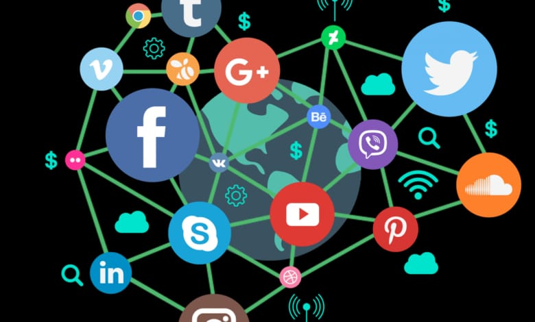

Teknologi Informasi (TI), atau dalam bahasa Inggris dikenal dengan istilah Information technology (IT) adalah istilah umum untuk teknologi apa pun yang membantu manusia dalam membuat, mengubah, menyimpan, mengomunikasikan dan/atau menyebarkan informasi. TI menyatukan komputasi dan komunikasi berkecepatan tinggi untuk data, suara, dan video. Contoh dari Teknologi Informasi bukan hanya berupa komputer pribadi, tetapi juga telepon, TV, peralatan rumah tangga elektronik, dan perangkat genggam modern (misalnya ponsel).
Pengolahan, penyimpanan dan penyebaran vokal, informasi bergambar, teks dan numerik oleh mikroelektronika berbasis kombinasi komputasi dan telekomunikasi. Istilah dalam pengertian modern pertama kali muncul dalam sebuah artikel 1958 yang diterbitkan dalam Harvard Business Review, di mana penulis Leavitt dan Whisler berkomentar bahwa "teknologi baru belum memiliki nama tunggal yang didirikan. Kita akan menyebutnya teknologi informasi (TI). ". Beberapa bidang modern yang muncul dari teknologi informasi adalah generasi berikutnya teknologi web, bioinformatika, komputasi awan, sistem informasi global, Skala besar basis pengetahuan dan lain-lain.